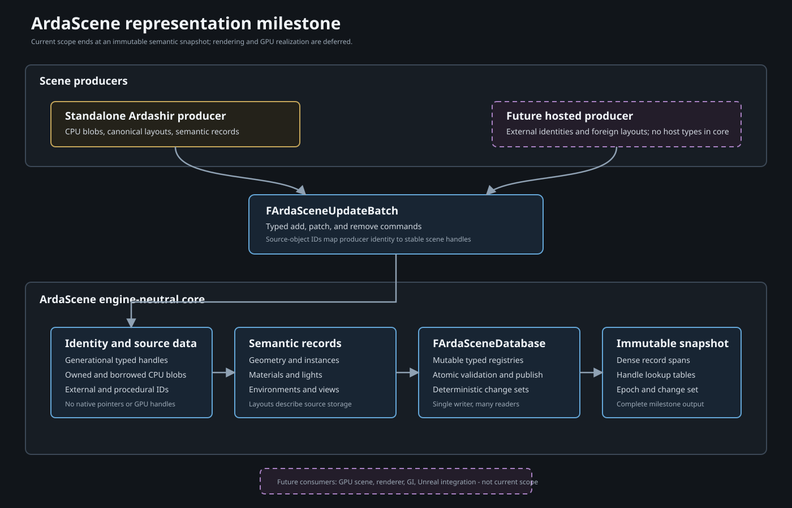
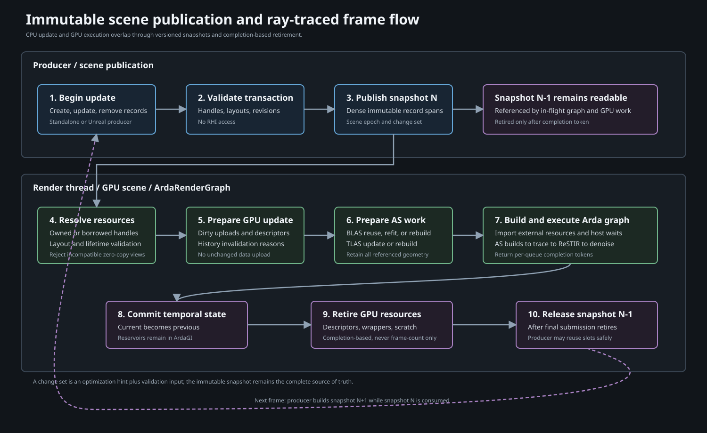
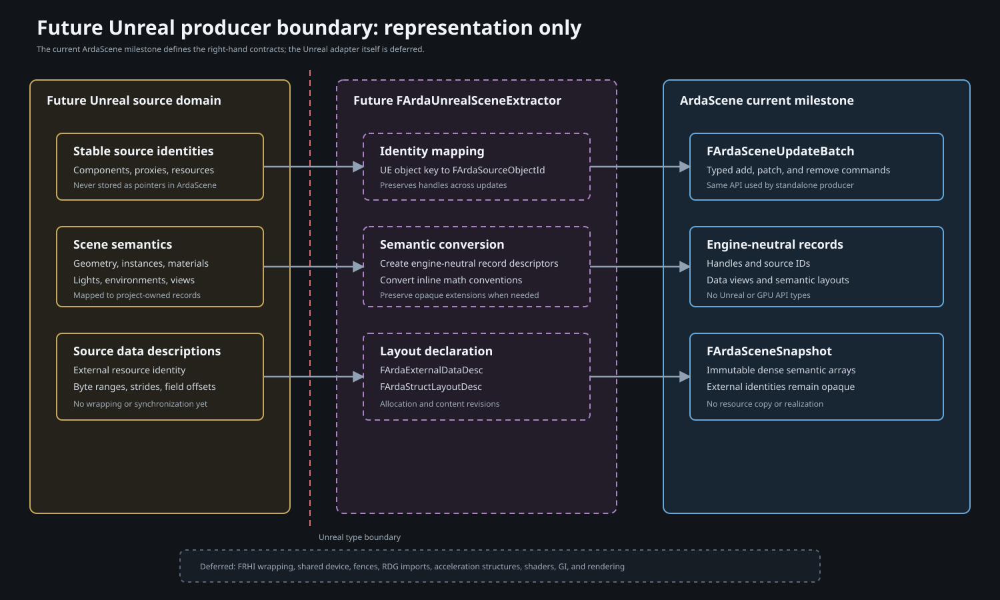

Archived ArdaScene Representation Plan
Status and scope
Archived on September 18, 2026. The current source tree retains only
ArdaInfra, ArdaTests and ArdaTrace; Source/ArdaScene and the other
higher-level module scaffolds have been removed. This document and its diagrams
preserve the earlier proposal as design references. References below to a
"current milestone", proposed source layout or future APIs describe that
proposal, not implemented modules or an active delivery commitment.
The proposal covers the engine-neutral representation of a renderable scene.
The current milestone does not plan or implement:
- global illumination or ReSTIR algorithms;
- path tracing, ray dispatch, denoising, or presentation;
- BLAS or TLAS construction;
- GPU scene upload or bindless descriptor management;
- ArdaDependencyGraph ray-tracing extensions;
- shared-device, queue, fence, or resource-state integration;
- an Unreal plugin or renderer replacement;
- material shader compilation or translation.
Those systems will eventually consume ArdaScene, but they are deliberately
outside the current plan. The goal now is to define scene data that can be
created by a standalone Ardashir application and, later, populated by an
Unreal adapter without redesigning the core model.
Architectural decision
ArdaScene will be a renderer-facing scene database that publishes immutable,
versioned snapshots of semantic records.
It will not be:
- a gameplay ECS;
- a world simulation;
- an owner of backend or ArdaDependencyGraph objects;
- a container of Unreal types;
- a hard-coded GPU memory layout;
- a list of rendering callbacks.

Both standalone and hosted producers use the same update API:
Standalone authoring ---------+
+--> FArdaSceneUpdateBatch
Future Unreal extractor ------+ |
v
FArdaSceneDatabase
|
v
FArdaSceneSnapshot
The immutable snapshot is the complete output of this milestone.
Required properties
Standalone first
Ardashir must create and use a scene without Unreal, an external device, or a foreign resource registry.
A standalone producer can provide:
- immutable CPU geometry blobs;
- application-owned resource declarations;
- procedural source tokens;
- transforms, materials, lights, environments, and views.
The standalone path is not a fallback adapter. It is the reference producer used by the initial tests.
Host neutral
No public ArdaScene header may include:
- Unreal Engine headers;
- native graphics API headers;
- ArdaBackend headers;
- ArdaDependencyGraph headers;
- D3D12 or Vulkan headers.
Future adapters communicate through project-owned IDs, descriptors, layouts, and update batches.
Representation, not realization
The scene describes:
- what objects exist;
- how records refer to one another;
- where source data can be found;
- how source data is laid out;
- what changed between snapshots.
It does not decide:
- where GPU memory is allocated;
- whether data is copied or consumed directly;
- which acceleration structures are built;
- which shaders or passes execute;
- how resources are synchronized.
Stable identity
Handles remain stable while records move between dense storage locations. Stale handles must be detected after removal and slot reuse.
Immutable publication
Producers mutate an update transaction. Consumers only read a published snapshot. The producer may build snapshot N+1 while consumers retain snapshot N.
Extensible source layouts
Ardashir-native data should use simple canonical layouts. Foreign data should be describable through semantic field layouts without forcing the scene module to understand Unreal's internal structs.
This enables a future zero-copy consumer, but the scene representation itself does not perform importing or copying.
Module boundary
Only ArdaScene is in the current implementation scope.
Planned public headers:
Source/ArdaScene/Public/
ArdaScene.h
ArdaSceneHandles.h
ArdaSceneMath.h
ArdaSceneFormats.h
ArdaSceneSources.h
ArdaSceneLayouts.h
ArdaSceneGeometry.h
ArdaSceneMaterials.h
ArdaSceneLights.h
ArdaSceneView.h
ArdaSceneUpdates.h
ArdaSceneSnapshot.h
ArdaSceneDatabase.h
Planned private files:
Source/ArdaScene/Private/
ArdaSceneDatabase.cpp
ArdaSceneRegistry.h
ArdaSceneSnapshot.cpp
ArdaSceneValidation.cpp
ArdaScene should depend only on EASTL and project-owned, backend-neutral
interfaces. It must not link a concrete native backend module directly.
Future modules such as ArdaSceneGPU, ArdaInterop, ArdaGI, and
Integrations/Unreal/ArdaUnreal are consumers or producers of this API. They
are not deliverables in this plan.
Type conventions
All proposed types follow the project convention:
FArdafor structs, classes, and aliases;IArdafor interfaces;EArdafor enums;TArdafor templates;mprefix for data members;mbprefix for boolean data members.
Code fragments in this document are interface sketches, not implementation.
Generational handle model
Use one typed generational handle template:
template <typename TagType>
class TArdaSceneHandle
{
public:
[[nodiscard]] bool IsValid() const noexcept;
[[nodiscard]] uint32_t GetIndex() const noexcept;
[[nodiscard]] uint32_t GetGeneration() const noexcept;
private:
uint32_t mIndex = InvalidIndex;
uint32_t mGeneration = 0;
};
Public aliases:
using FArdaSourceHandle = TArdaSceneHandle<FArdaSourceTag>;
using FArdaDataHandle = TArdaSceneHandle<FArdaDataTag>;
using FArdaLayoutHandle = TArdaSceneHandle<FArdaLayoutTag>;
using FArdaGeometryHandle = TArdaSceneHandle<FArdaGeometryTag>;
using FArdaMaterialHandle = TArdaSceneHandle<FArdaMaterialTag>;
using FArdaInstanceHandle = TArdaSceneHandle<FArdaInstanceTag>;
using FArdaLightHandle = TArdaSceneHandle<FArdaLightTag>;
using FArdaEnvironmentHandle = TArdaSceneHandle<FArdaEnvironmentTag>;
using FArdaViewHandle = TArdaSceneHandle<FArdaViewTag>;
Required behavior:
- handles are type incompatible;
- removal invalidates the old generation;
- slot reuse increments generation;
- snapshots can resolve a valid handle to a dense index;
- invalid and stale handles never alias live records;
- handle values do not expose pointers or storage addresses.
The generational FArdaGraphNodeHandle is a type-safety precedent. Scene handles
also need generations because the database is long-lived and supports removal.
Source identity
Every data source is identified independently from a scene handle:
struct FArdaSourceId
{
uint64_t mHigh;
uint64_t mLow;
};
Examples:
- the standalone application;
- an asset loader;
- a procedural generator;
- a future Unreal world or renderer instance.
Every source-owned object has a stable source-local key:
struct FArdaSourceObjectId
{
FArdaSourceId mSource;
uint64_t mObject;
};
The database maintains the optional mapping:
FArdaSourceObjectId <-> typed FArdaSceneHandle
This lets a future Unreal extractor update or remove records by component or proxy identity without placing Unreal pointers in scene records.
Source IDs are semantic identities. They are not native resource pointers, descriptor indices, or GPU addresses.
Data-source representation
Scene records refer to source data through FArdaDataHandle. A data record
describes where bytes originate without interpreting them as a GPU allocation.
enum class EArdaDataSourceKind
{
OwnedCpuBlob,
BorrowedCpuBlob,
ExternalResource,
Procedural
};
Owned CPU blob
Used by standalone asset loading and tests.
FArdaOwnedCpuBlobDesc contains:
- immutable shared byte storage;
- byte size and alignment;
- content hash;
- debug name;
- content revision.
Snapshots share ownership of immutable blob storage. Producers replace a blob to change it; they do not mutate published bytes.
Borrowed CPU blob
Used when the application owns immutable CPU memory.
FArdaBorrowedCpuBlobDesc contains:
- a non-owning byte span;
- a reference-counted lifetime token;
- byte size and alignment;
- content revision.
The lifetime token must outlive every snapshot that refers to the bytes.
External resource
Used for future Unreal or application-managed GPU resources.
struct FArdaExternalDataDesc
{
FArdaSourceObjectId mIdentity;
EArdaExternalResourceKind mKind;
FArdaExternalResourceDesc mDescription;
uint64_t mAllocationRevision;
uint64_t mContentRevision;
};
FArdaExternalResourceDesc uses engine-neutral fields:
- buffer byte size or texture extent;
- format;
- usage capabilities;
- dimensions, mips, and array layers;
- optional stride;
- debug name.
It does not contain backend-specific handles, FRHI*, native pointers, resource states,
queues, or fences. Those belong to a future realization layer.
Procedural source
Used when geometry or attributes are generated later.
FArdaProceduralDataDesc contains:
- a stable producer token;
- declared output kind and dimensions;
- parameter data handle;
- generation revision;
- bounds when known.
The scene does not execute the producer.
Formats and layouts
Engine-neutral format enum
Define EArdaDataFormat for representation-relevant values:
- scalar integer and floating-point widths;
- normalized integer formats;
- two-, three-, and four-component vectors;
- packed normal/tangent formats;
- index formats;
- matrix component formats;
- common texture formats required by materials and environments.
The enum must not mirror all native API formats. It should describe scene data semantics. Future consumers map it to their own APIs.
Data views
struct FArdaDataView
{
FArdaDataHandle mData;
uint64_t mByteOffset;
uint64_t mByteSize;
uint32_t mStride;
uint32_t mElementCount;
EArdaDataFormat mFormat;
FArdaLayoutHandle mLayout;
};
Invariants:
- offset and size lie within the data record;
- structured views have non-zero stride;
- element count and stride fit within byte size;
- typed views use compatible formats;
- empty optional views are explicitly invalid.
Semantic structure layouts
enum class EArdaDataSemantic
{
Position,
Normal,
Tangent,
BitangentSign,
TexCoord0,
TexCoord1,
Color0,
CurrentTransform,
PreviousTransform,
MaterialIndex,
GeometryIndex,
InstanceMask,
Custom
};
FArdaStructFieldDesc contains:
- semantic;
- byte offset;
- format;
- array count;
- optional custom semantic name or ID.
FArdaStructLayoutDesc contains:
- stride;
- required alignment;
- matrix storage and multiplication convention;
- ordered field list;
- layout version;
- deterministic layout hash;
- debug name.
The database interns layouts by full descriptor equality or hash. Published layouts are immutable.
Canonical standalone layouts can be declared as constants. A future Unreal producer can register layouts that describe its source buffers.
Math and coordinate conventions
Any future ArdaSceneMath.h should adopt the existing
ArdaMath CPU types and conventions.
Scene-specific bounds such as FArdaBox and FArdaSphere can build on those
Eigen-backed types:
FArdaVector2f,FArdaVector3f,FArdaVector4f;FArdaMatrix3x4f,FArdaMatrix4f;FArdaModelMatrix,FArdaViewMatrix,FArdaProjectionMatrix,FArdaViewProjectionMatrix,FArdaNormalMatrix;FArdaQuaternionf,FArdaAffineTransform3f;FArdaCameraMatricesfor world-to-view and view-to-clip transforms.
CPU matrices use row-major storage and multiply column vectors. Transform
composition is Clip = Projection * View * Model * Position. The shared view
helper uses positive Z forward, positive X right and positive Y up; producers
must state their world-up axis and units when converting foreign coordinates.
Projection helpers default to reversed device Z in [0, 1]: near maps to 1,
far maps to 0, depth clears to 0, and depth tests use Greater or
GreaterOrEqual.
Explicit POD layouts belong at serialization, shader-upload and import/export boundaries. Eigen objects are CPU values, not serialized byte representations; use the shared shader packing helpers or copy semantic coefficients into the declared boundary layout. Foreign buffer layouts may retain their original representation, but their layout descriptor must state storage, multiplication and coordinate conventions explicitly.
Geometry representation
enum class EArdaGeometryKind
{
Triangles,
ProceduralAabbs,
Curves,
Spheres,
Extension
};
FArdaGeometryRecord contains:
- stable geometry handle;
- source object ID;
- geometry kind;
- position data view;
- optional index data view;
- optional normal, tangent, UV, color, and custom attribute views;
- primitive count;
- vertex count;
- index format;
- topology;
- winding;
- object-space bounds;
- ordered geometry segments;
- geometry flags;
- content and layout revisions;
- optional extension type and payload handle.
FArdaGeometrySegment contains:
- first primitive;
- primitive count;
- material slot;
- opacity classification;
- two-sided flag;
- segment-local flags;
- optional segment bounds.
The record does not contain:
- BLAS handles;
- build flags;
- scratch requirements;
- shader binding table offsets;
- native API geometry descriptors.
Those are derived by a future renderer from geometry semantics.
Instance representation
FArdaInstanceRecord contains:
- stable instance handle;
- source object ID;
- geometry handle;
- current transform;
- previous transform;
- optional parent instance handle;
- ordered material overrides;
- visibility mask;
- layer mask;
- object category flags;
- world-space bounds;
- producer payload ID;
- transform, material, and visibility revisions.
The core representation favors inline current and previous transforms because they are deterministic and standalone-friendly.
To support a future externally managed transform array, the record may optionally contain:
- a transform data view;
- an element index;
- a transform layout handle.
Inline and external transform sources are mutually exclusive and validated.
The scene does not generate motion vectors or TLAS instance descriptors.
Material representation
The current milestone represents material identity and source data, not shader execution.
enum class EArdaMaterialModel
{
CanonicalSurface,
Volume,
Emissive,
External,
Extension
};
FArdaMaterialRecord contains:
- stable material handle;
- source object ID;
- material model;
- opacity classification;
- two-sided flag;
- scalar/vector parameter block data view;
- texture parameter bindings;
- optional external material payload;
- emissive summary metadata;
- material revision;
- optional extension type.
FArdaTextureParameterBinding contains:
- semantic parameter ID;
- texture data handle;
- sampler declaration ID;
- texture-coordinate set;
- transform or scale metadata;
For CanonicalSurface, define a representation-only parameter schema covering
common closure inputs such as:
- base color;
- metallic;
- roughness;
- specular or IOR;
- transmission;
- normal mapping;
- opacity;
- emissive color and intensity.
This schema does not prescribe the future GI algorithm or shader implementation.
For External, preserve:
- external source object ID;
- parameter data views;
- texture bindings;
- opaque material type token;
- revision.
A future Unreal adapter can populate this record even before material translation exists.
Light representation
enum class EArdaLightKind
{
Directional,
Point,
Spot,
Rectangle,
Disk,
Sphere,
Environment,
MeshEmissive,
Extension
};
FArdaLightRecord contains:
- stable light handle;
- source object ID;
- light kind;
- transform or position/direction;
- radiometric color and intensity;
- geometric dimensions;
- attenuation/range metadata;
- visibility or layer mask;
- optional texture data handle;
- optional instance and geometry segment for mesh emissives;
- light revision;
- optional extension payload.
The scene does not build light trees, CDFs, alias tables, reservoirs, or any other sampling structure.
Environment representation
FArdaEnvironmentRecord contains:
- stable environment handle;
- environment texture or procedural source;
- orientation;
- intensity and tint;
- atmosphere or background extension payload;
- environment revision.
Only one active environment may be selected per view in the initial model. The representation can later support blending through an ordered list.
View representation
FArdaViewRecord contains:
- stable view handle;
- source object ID;
- current and previous camera transforms;
- projection description;
- view and projection matrices when explicitly supplied;
- viewport and target extent;
- jitter;
- aperture and focus metadata;
- exposure metadata;
- active environment handle;
- layer and visibility masks;
- frame sequence number;
- camera-cut and history-valid flags;
- view revision.
This is camera and output metadata only. The scene does not allocate history buffers or define temporal rendering behavior.
Optional hierarchy
ArdaScene is not a scene-graph transform engine, but instances may optionally
refer to a parent instance.
Rules:
- published records contain resolved world transforms;
- parent handles preserve authoring relationships and change propagation hints;
- cycles are invalid;
- consumers never need to traverse the hierarchy to render a snapshot;
- removing a parent does not implicitly remove children unless the producer requests those removals.
Hierarchy resolution occurs while building an update batch or publishing a snapshot, not while reading the snapshot.
Scene update model

Use a transaction-oriented API:
class FArdaSceneDatabase
{
public:
[[nodiscard]] FArdaSceneUpdateWriter BeginUpdate();
[[nodiscard]] FArdaScenePublishResult Publish(
FArdaSceneUpdateWriter&& Update);
};
The writer exposes typed commands:
FArdaGeometryHandle AddGeometry(const FArdaGeometryDesc& Desc);
void UpdateGeometry(FArdaGeometryHandle Handle, const FArdaGeometryPatch& Patch);
void RemoveGeometry(FArdaGeometryHandle Handle);
FArdaInstanceHandle AddInstance(const FArdaInstanceDesc& Desc);
void UpdateInstance(FArdaInstanceHandle Handle, const FArdaInstancePatch& Patch);
void RemoveInstance(FArdaInstanceHandle Handle);
Equivalent operations exist for data, layouts, materials, lights, environments, and views.
Patch types make changed fields explicit. They prevent callers from replacing an entire record merely to update a transform.
Publish is atomic from a consumer perspective:
- validate all commands;
- resolve source-object mappings;
- apply commands to mutable registries;
- resolve hierarchy and bounds requirements;
- build dense immutable arrays;
- generate a deterministic change set;
- advance the scene epoch;
- publish the new snapshot.
If validation fails, no partial snapshot is published.
Change-set representation
enum class EArdaSceneChangeFlags : uint32_t
{
None = 0,
Data = 1u << 0u,
Layout = 1u << 1u,
Geometry = 1u << 2u,
Transform = 1u << 3u,
Material = 1u << 4u,
Visibility = 1u << 5u,
Light = 1u << 6u,
Environment = 1u << 7u,
View = 1u << 8u,
Residency = 1u << 9u
};
FArdaSceneChangeSet contains typed added, modified, and removed handle lists.
Modified entries include field-level flags and old/new revisions.
The change set is an optimization hint and audit record. The complete snapshot remains the source of truth.
Ordering must be deterministic:
- type order is fixed;
- handles are ordered by stable index;
- duplicate patches are coalesced;
- add-then-remove in one transaction produces no published record;
- remove-then-add produces a new generation.
Immutable snapshot
FArdaSceneSnapshot contains:
- scene epoch;
- source registry;
- immutable data records;
- immutable layout records;
- dense geometry records;
- dense material records;
- dense instance records;
- dense light records;
- dense environment records;
- dense view records;
- typed handle-to-dense-index lookup tables;
- the change set from the preceding epoch;
- validation and diagnostic metadata.
Read API:
class FArdaSceneSnapshot
{
public:
[[nodiscard]] uint64_t GetEpoch() const noexcept;
[[nodiscard]] FArdaSpan<const FArdaGeometryRecord> GetGeometries() const;
[[nodiscard]] FArdaSpan<const FArdaInstanceRecord> GetInstances() const;
[[nodiscard]] const FArdaGeometryRecord* FindGeometry(
FArdaGeometryHandle Handle) const noexcept;
};
The actual span type should be project-owned or an EASTL-compatible immutable view.
Snapshot records are compact values and handles. They do not use one virtual object per primitive.
Storage organization
The mutable database uses one generational slot registry per record type.
The published snapshot uses dense arrays:
Handle registry:
slot -> generation + dense index
Dense arrays:
geometry[0..N)
instances[0..M)
materials[0..K)
lights[0..L)
Benefits:
- stale-handle detection;
- stable semantic identity;
- compact sequential consumer traversal;
- no pointer chasing through a polymorphic hierarchy;
- freedom to reorder dense arrays without invalidating handles.
Dense ordering should remain stable when practical, but correctness must not depend on dense indices persisting across snapshots.
Ownership and lifetime
FArdaSceneDatabase owns mutable registry state.
FArdaSceneSnapshotRef owns immutable snapshot storage through reference
counting.
Data records use:
- shared ownership for immutable owned CPU blobs;
- explicit lifetime tokens for borrowed CPU blobs;
- pure identity and metadata for external resources;
- no ownership for future GPU objects.
Removing a scene record:
- invalidates its handle in the next snapshot;
- does not mutate earlier snapshots;
- releases source data only after all retaining snapshots are destroyed;
- does not destroy an external resource.
Threading model
Initial policy:
- one writer transaction at a time;
- any number of immutable snapshot readers;
- publication under a short database lock;
- no locks during ordinary snapshot traversal;
- snapshots may cross threads through reference-counted handles.
The first implementation does not need lock-free mutation.
Required concurrency behavior:
- a producer can build update N+1 while a reader consumes snapshot N;
- publication never exposes partially applied records;
- borrowed data lifetime remains valid across reader threads;
- destruction waits only on snapshot references, not renderer-specific fences.
GPU completion lifetime is a future realization-layer responsibility.
Validation rules
Handle validation
- referenced handles must be valid in the transaction's resulting state;
- stale generations are rejected;
- cross-type handles cannot compile;
- removal is rejected while required references remain unless those references are removed or patched in the same transaction.
Data-view validation
- byte ranges fit in the source record;
- stride and count are consistent;
- format and semantic are compatible;
- layout fields fit within stride;
- layout hash matches descriptor contents;
- borrowed data has a lifetime token.
Geometry validation
- required position data exists;
- index and vertex ranges are valid;
- segment ranges do not exceed primitive count;
- material slots are valid or explicitly unbound;
- bounds are finite;
- topology is supported by the geometry kind.
Instance validation
- geometry exists;
- material overrides reference valid slots and materials;
- transforms and bounds are finite;
- hierarchy is acyclic;
- inline and external transform sources are not both active.
Material, light, and view validation
- required data for the selected kind exists;
- texture and data handles resolve;
- numeric values are finite;
- ranges and dimensions are non-negative;
- an active environment resolves;
- previous-state flags are internally consistent.
Error model
Scene update errors should return structured diagnostics:
enum class EArdaSceneError
{
InvalidHandle,
StaleGeneration,
MissingReference,
InvalidDataRange,
InvalidLayout,
InvalidGeometry,
InvalidHierarchy,
DuplicateSourceObject,
LifetimeUnavailable,
UnsupportedExtension
};
FArdaSceneDiagnostic contains:
- error code;
- record type and handle;
- source object ID;
- field path;
- human-readable message.
Validation should collect independent errors when safe instead of stopping at the first malformed record.
Extension mechanism
Avoid subclassing every record type.
Each extensible record may contain:
FArdaExtensionTypeId;FArdaDataHandlefor immutable payload data;- extension revision.
Extension IDs are globally stable project IDs. Unknown extensions remain preserved in snapshots but are not interpreted by core validation beyond data range and lifetime checks.
This supports future specialized geometry or host metadata without adding Unreal-specific fields to core records.
Future Unreal producer boundary

The future Unreal adapter will be only a producer of update batches at this layer.
It will map:
- component or proxy identity to
FArdaSourceObjectId; - Unreal geometry to
FArdaGeometryRecord; - Unreal-owned buffers to
FArdaExternalDataDesc; - Unreal buffer fields to
FArdaStructLayoutDesc; - primitive instances to
FArdaInstanceRecord; - materials to canonical or external material records;
- lights and views to corresponding semantic records;
- removals and revisions to update commands.
This plan does not define:
- how
FRHI*resources are wrapped; - how Unreal command lists synchronize with Arda;
- how Unreal materials become shaders;
- how Unreal GPU Scene data is read;
- where the adapter runs in Unreal's renderer.
The representation is considered successful if a mock producer can create the same snapshot shape that a future Unreal extractor would create.
Standalone producer boundary
The standalone reference producer will:
- register itself as a source;
- create immutable CPU geometry blobs;
- register canonical layouts;
- create materials, instances, lights, environments, and views;
- submit update batches;
- retain and inspect snapshots.
No backend initialization is required for ArdaScene unit or integration
tests.
A future standalone renderer will consume these snapshots, but rendering is not part of the current acceptance criteria.
Testing plan
Handle tests
- default handles are invalid;
- type-specific handles are incompatible;
- removal invalidates the old generation;
- slot reuse creates a new generation;
- stale handles fail lookup;
- dense reordering does not change handle identity.
Source and data tests
- source object IDs map deterministically to handles;
- duplicate source IDs are rejected;
- immutable owned blobs survive snapshot retention;
- borrowed blobs require and retain lifetime tokens;
- external resources retain only identity and metadata;
- procedural source revisions are tracked.
Layout tests
- layouts intern deterministically;
- field overlap policy is enforced;
- fields outside stride are rejected;
- equivalent layouts have equal hashes;
- custom semantics round-trip through snapshots;
- matrix conventions are preserved.
Record tests
- triangle geometry with canonical views validates;
- malformed ranges and segments fail;
- instances resolve geometry and material references;
- hierarchy cycles fail;
- current and previous transforms are preserved;
- each light and view kind validates required fields;
- external material records preserve opaque payload identity.
Transaction tests
- add, patch, and remove operations are atomic;
- failed publication leaves the previous snapshot active;
- duplicate patches coalesce deterministically;
- add-then-remove publishes no record;
- cross-record references may be added in one transaction;
- source-object mappings update with record lifetime.
Snapshot tests
- snapshots are immutable;
- readers can retain N while N+1 is published;
- dense arrays and handle lookup agree;
- change sets match full snapshot differences;
- prior snapshots retain removed records and owned data;
- snapshot destruction releases data at the correct time.
Standalone representation test
Construct a complete non-rendered scene containing:
- one indexed triangle geometry;
- one canonical material;
- one instance with current and previous transforms;
- one analytic light;
- one environment;
- one view.
Publish a second snapshot changing only the transform and verify:
- semantic handles remain stable;
- geometry and material revisions do not change;
- only transform change flags are emitted;
- snapshot one remains readable;
- no native backend, RDG, or Unreal dependency is required.
Mock hosted-producer test
Use engine-neutral mock external resource IDs and a foreign vertex layout to produce the same semantic scene shape. Verify that:
- no native pointer is stored;
- layout offsets and revisions survive publication;
- allocation and content revisions are distinct;
- replacing an external allocation does not change geometry identity;
- the scene module performs no copy or realization.
Current delivery sequence
Only the following sequence belongs to this plan.
Phase 1: foundational types
Define:
- typed generational handles;
- source and source-object IDs;
- math and coordinate conventions;
- engine-neutral formats;
- diagnostics and extension IDs.
Exit criterion: foundational types compile without a native graphics API or Unreal.
Phase 2: data and layout records
Define:
- owned and borrowed CPU data records;
- external and procedural data declarations;
- data views;
- semantic field layouts;
- layout validation and hashing.
Exit criterion: canonical and mock foreign layouts can be represented and validated.
Phase 3: semantic scene records
Define:
- geometry and segments;
- instances and optional hierarchy;
- materials and texture parameter bindings;
- lights and environments;
- views.
Exit criterion: a complete standalone scene description can be expressed with no renderer.
Phase 4: database and transactions
Define:
- typed mutable registries;
- update writer and patch operations;
- source-object mapping;
- atomic validation and publication;
- deterministic change-set generation.
Exit criterion: all record types support atomic add, patch, and removal.
Phase 5: immutable snapshots
Define:
- dense immutable storage;
- typed lookup;
- reference-counted snapshot lifetime;
- epoch and change-set access;
- multi-reader publication behavior.
Exit criterion: snapshot N remains valid while N+1 is built and published.
Phase 6: representation verification
Add:
- focused unit tests;
- standalone complete-scene test;
- mock foreign-producer test;
- public API documentation.
Exit criterion: the scene representation works independently of all rendering and host-integration modules.
Deferred plans
Separate future plans will cover:
- GPU scene realization;
- ArdaBackend and ArdaDependencyGraph resource import;
- acceleration structures;
- bindless resource management;
- shared-device and synchronization contracts;
- Unreal renderer integration;
- material shader adaptation;
- path tracing and GI algorithms;
- ReSTIR reservoirs and temporal rendering;
- denoising and presentation;
- Vulkan host interop.
None of these is a dependency for completing the current ArdaScene representation milestone.
Acceptance criteria
The representation plan is complete when:
ArdaScenebuilds and tests without a native backend module, ArdaDependencyGraph, or Unreal.- A standalone application can represent a complete scene using immutable CPU data and canonical layouts.
- A mock hosted producer can represent the same scene using external resource identities and foreign layouts.
- Typed generational handles detect stale references.
- Transactions publish atomically and produce deterministic change sets.
- Snapshots are immutable, dense, and safely retained across publications.
- Core records contain no GPU handles, graph references, native pointers, queues, fences, shader tables, or rendering callbacks.
- No GI, rendering, AS, or synchronization implementation is required to satisfy the milestone.
Related existing foundations
Source/ArdaScene/Public/ArdaScene.h: current placeholder API.Source/ArdaScene/CMakeLists.txt: current module dependency declaration.Source/ArdaInfra/ArdaGraph/Public/ArdaDirectedGraph.h: precedent for typed handles, but not a dependency of this module.Conventions/ArdaCodingConventions.md: naming, ownership, and public-header conventions.